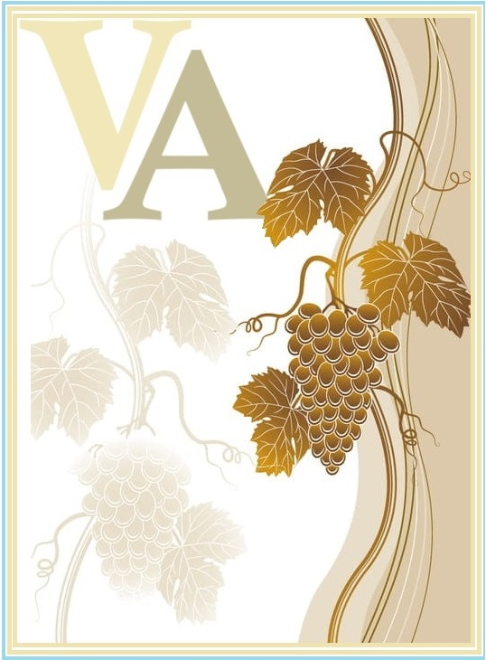

El vino más tradicional entre los argentinos es el tinto, de mucho cuerpo y de suyo muy astringente. Por su color es coloquialmente llamado quebracho, en alusión al Schinopsis balansae, árbol austral de madera rojiza y, al igual que los vinos tintos, rico precisamente en taninos. En la segunda mitad del siglo xx las clases medias del país favorecieron los llamados "vinos rosados", de bouquet intermedio entre los intensos y ásperos tintos (popularmente llamados por los porteños: "totíns" o "tintardos") y los más suaves "claretes" de tipo italiano, o incluso los muy suaves al paladar (aunque en ocasiones de alta graduación alcohólica) vinos blancos. Asimismo, en similar época, se generalizaron entre la población los vinos blancos comunes; tal generalización conllevó una negligente elaboración, de la cual se libraron los excelentes y originarios vinos torrontés, de color melado, gusto agradable y frutado, excelente aroma y grado alcohólico asaz fuerte.